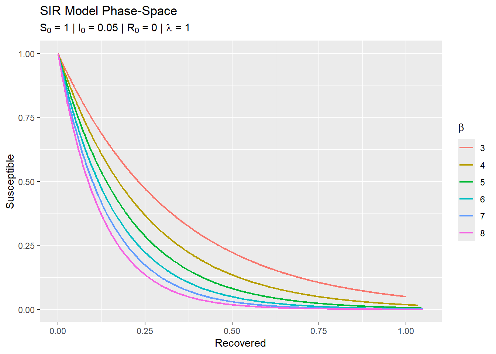

SIR Model


Overview
This document focuses on demonstrating the SIR model, originally introduced by Kermack and McKendrick in (1927). The SIR model is a foundational framework in epidemiology, designed to analyze the spread of infectious diseases by categorizing the population into three compartments: Susceptible (S), Infected (I), and Recovered (R).
The dynamics of the model are represented by the following set of first-order, nonlinear differential equations:
\[ \begin{aligned} \frac{dS}{dt} &= -\beta S I \\ \frac{dI}{dt} &= \beta S I - \gamma I \\ \frac{dR}{dt} &= \gamma I \end{aligned} \]
Here, \(\beta\) represents the transmission rate, and \(\gamma\) is the recovery rate.
Setting up the environment
Numerical solution of the equations
Code
sir <- function(
s = 1,
i = 0.05,
r = 0,
beta = 3,
lambda = 1,
from = 0,
to = 10,
by = 0.01
) {
checkmate::assert_number(s, lower = 0)
checkmate::assert_number(i, lower = 0)
checkmate::assert_number(r, lower = 0)
checkmate::assert_number(beta)
checkmate::assert_number(lambda)
checkmate::assert_number(from, lower = 0)
checkmate::assert_number(to, lower = from)
checkmate::assert_number(by, lower = 0)
fun <- function (t, y, parms) {
list2env(as.list(y), envir = environment())
list2env(as.list(parms), envir = environment())
list(
c(
ds = (- beta) * s * i,
di = beta * s * i - lambda * i,
dr = lambda * i
)
)
}
initial_values <- c(s = s, i = i, r = r)
parameters <- list(beta = beta, lambda = lambda)
time <- seq(from = from, to = to, by = by)
data <-
deSolve::ode(
y = initial_values,
times = time,
func = fun,
parms = parameters
) |>
dplyr::as_tibble() |>
dplyr::mutate(dplyr::across(dplyr::everything(), ~ as.numeric(.x)))
list(
data = data,
initial_values = as.list(initial_values),
parameters = as.list(parameters)
) |>
invisible()
}Code
sir() |> magrittr::extract2("data")
#> # A tibble: 1,001 × 4
#> time s i r
#> <dbl> <dbl> <dbl> <dbl>
#> 1 0 1 0.05 0
#> 2 0.01 0.998 0.0510 0.000505
#> 3 0.02 0.997 0.0520 0.00102
#> 4 0.03 0.995 0.0531 0.00155
#> 5 0.04 0.994 0.0541 0.00208
#> 6 0.05 0.992 0.0552 0.00263
#> # ℹ 995 more rowsPlotting disease dynamics
Code
plot_pop_dynamics <- function(
s = 1,
i = 0.05,
r = 0,
beta = 3,
lambda = 1,
from = 0,
to = 10,
by = 0.01
) {
checkmate::assert_number(s, lower = 0)
checkmate::assert_number(i, lower = 0)
checkmate::assert_number(r, lower = 0)
checkmate::assert_number(beta)
checkmate::assert_number(lambda)
checkmate::assert_number(from, lower = 0)
checkmate::assert_number(to, lower = from)
checkmate::assert_number(by, lower = 0)
sir(s, i, r, beta, lambda, from, to, by) |> list2env(envir = environment())
plot <-
data |>
ggplot2::ggplot(ggplot2::aes(x = time)) +
ggplot2::geom_line(
ggplot2::aes(y = s, color = "Susceptible"),
linewidth = 0.75
) +
ggplot2::geom_line(
ggplot2::aes(y = i, color = "Infected"),
linewidth = 0.75
) +
ggplot2::geom_line(
ggplot2::aes(y = r, color = "Recovered"),
linewidth = 0.75
) +
ggplot2::labs(
title = "SIR Model Disease Dynamics",
subtitle = latex2exp::TeX(
paste0(
"$S_0$ = ", s, " | ",
"$I_0$ = ", i, " | ",
"$R_0$ = ", r, " | ",
"$\\beta$ = ", round(beta, 2), " | ",
"$\\lambda$ = ", round(lambda, 2)
),
),
x = "Time",
y = "Proportion",
color = ggplot2::element_blank()
) +
ggplot2::scale_color_manual(
breaks = c("Susceptible", "Infected", "Recovered"),
values = c("blue", "red", "black")
)
print(plot)
invisible()
}Code
plot_pop_dynamics()Phase space visualization
Code
plot_phase_space <- function(
s = 1,
i = 0.05,
r = 0,
beta = seq(3, 8, by = 1),
lambda = 1,
from = 0,
to = 100,
by = 0.01,
theta = 180,
phi = 0
) {
checkmate::assert_number(s, lower = 0)
checkmate::assert_number(i, lower = 0)
checkmate::assert_number(r, lower = 0)
checkmate::assert_numeric(beta)
checkmate::assert_number(lambda)
checkmate::assert_number(from, lower = 0)
checkmate::assert_number(to, lower = from)
checkmate::assert_number(by, lower = 0)
checkmate::assert_number(theta, lower = 0)
checkmate::assert_number(phi, lower = 0)
colors <- gg_color_hue(length(beta))
plot <-ggplot2::ggplot()
for (j in seq_along(beta)) {
data_j <-
sir(s, i, r, beta[j], lambda, from, to, by) |>
magrittr::extract2("data") |>
dplyr::mutate(color = as.character(beta[j]))
plot <-
plot +
ggplot2::geom_path(
data = data_j,
ggplot2::aes(x = r, y = s, color = color),
linewidth = 1
)
}
colors <- gg_color_hue(length(beta))
names(colors) <- beta |> as.character()
plot <-
plot +
ggplot2::labs(
title = "SIR Model Phase-Space",
subtitle = latex2exp::TeX(
paste0(
"$S_0$ = ", s, " | ",
"$I_0$ = ", i, " | ",
"$R_0$ = ", r, " | ",
"$\\lambda$ = ", round(lambda, 2)
),
),
x = "Recovered",
y = "Susceptible"
) +
scale_color_manual(
name = latex2exp::TeX("$\\beta$"),
values = colors
)
print(plot)
invisible()
}Code
plot_phase_space()
References
Kermack, W. O., & McKendrick, A. G. (1927). A contribution to the mathematical theory of epidemics. Proceedings of the Royal Society of London. Series A, Containing Papers of a Mathematical and Physical Character, 115(772), 700–721. https://doi.org/10.1098/rspa.1927.0118